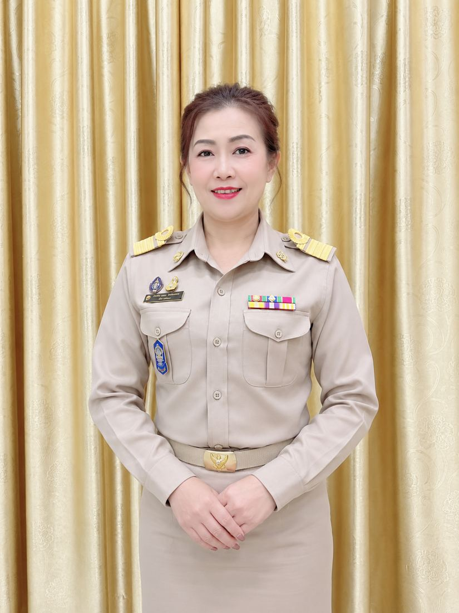
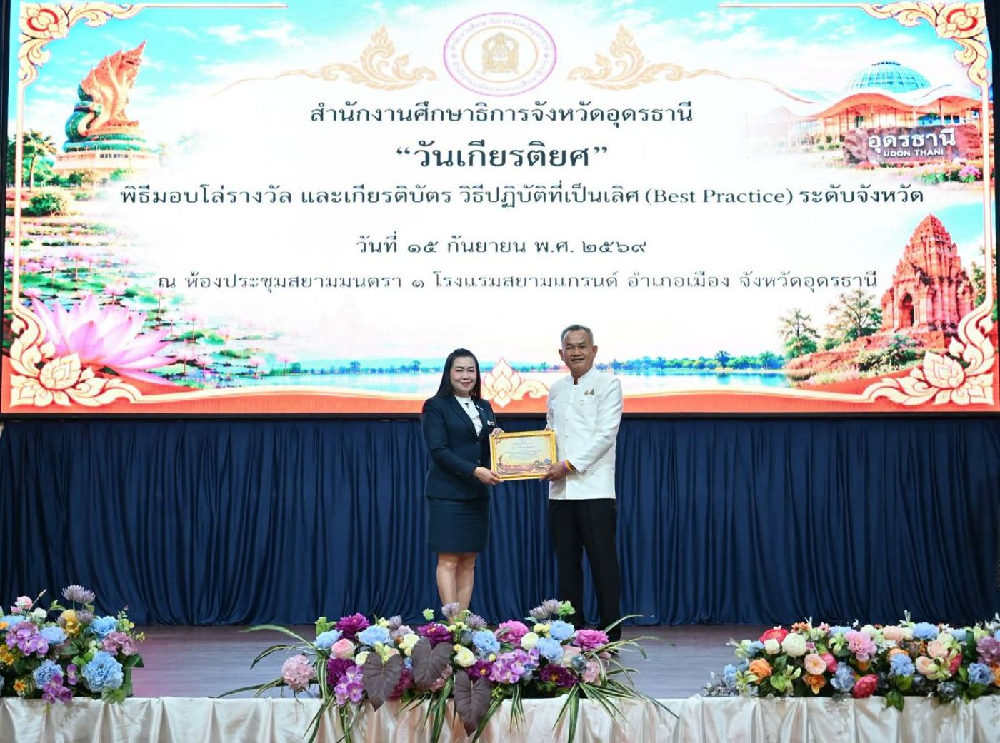

นิเทศด้วยหัวใจพัฒนาคุณภาพการศึกษา
เปลี่ยนการนิเทศจากการกำกับติดตาม สู่การเป็น “โค้ชเพื่อการพัฒนา” ด้วยนวัตกรรม UDON3 ที่ใช้ข้อมูล เทคโนโลยีดิจิทัล และชุมชนการเรียนรู้ทางวิชาชีพ ยกระดับครู ผู้เรียน และสถานศึกษาทั้งเขตพื้นที่

ที่ขับเคลื่อนด้วย UDON3
ได้รับการพัฒนา
ร่วมกระบวนการ
ของเครือข่าย ๒๕๖๖–๒๕๖๙
ด้วยหัวใจนักพัฒนา
ผู้นิเทศ ผู้ส่งเสริม และผู้ร่วมพัฒนาครู
ทำงานบนหลัก “พัฒนาครู คือ พัฒนาผู้เรียน และพัฒนาคุณภาพการศึกษา” ลงพื้นที่จริง รับฟังปัญหาของครู และติดตามผลจนเห็นการเปลี่ยนแปลงในห้องเรียน
- ชื่อ-สกุล
- นางสาวพัชรียาพร ห้วยทราย
- ตำแหน่ง
- ศึกษานิเทศก์
- วิทยฐานะ
- ศึกษานิเทศก์ชำนาญการพิเศษ
- สังกัด
- สพป.อุดรธานี เขต ๓ อำเภอหนองหาน จังหวัดอุดรธานี
- อายุราชการ
- 16 ปี 3 เดือน (ณ สิงหาคม ๒๕๖๙)
- กลุ่มโรงเรียนที่รับผิดชอบ
- กลุ่มโรงเรียนอำเภอกู่แก้ว
เข้าใจบริบทก่อนพัฒนา ใช้ข้อมูลก่อนตัดสินใจ และสะท้อนผลเพื่อปรับปรุง
หลักการทำงานนิเทศ · ศน.พัชรียาพร ห้วยทรายงานที่ได้รับมอบหมาย
- ปฏิบัติหน้าที่ผู้อำนวยการกลุ่มส่งเสริมการศึกษาทางไกล เทคโนโลยีสารสนเทศ และการสื่อสาร (DLICT)
- หัวหน้ากลุ่มงานสื่อ นวัตกรรม และเทคโนโลยีทางการศึกษา
- กลุ่มงานส่งเสริมและพัฒนาการประกันคุณภาพการศึกษา
- กลุ่มงานส่งเสริม สนับสนุน พัฒนาหลักสูตรการศึกษาขั้นพื้นฐาน หลักสูตรการศึกษาปฐมวัย และหลักสูตรการศึกษาพิเศษ
งานส่งเสริมการจัดการศึกษา
- กลุ่มสาระการเรียนรู้ภาษาไทย
- กลุ่มสาระการเรียนรู้ศิลปศึกษา
นาฏศิลป์ดนตรีทัศนศิลป์
หลักฐานเชิงประจักษ์ ๖ แฟ้ม
ทุกภาพและเอกสารในเว็บไซต์นี้มาจากแฟ้มต้นฉบับบน Google Drive เปิดดูเอกสารฉบับเต็มได้จากทุกการ์ด
UDON3 Smart Coaching Model
นวัตกรรมการนิเทศแบบโค้ชชิ่งดิจิทัล เพื่อส่งเสริมการจัดการเรียนรู้แบบ STEM Education และพัฒนาทักษะ Soft Skills ผ่านระบบคลังสื่อเทคโนโลยีดิจิทัล OBEC Content Center บูรณาการ Developmental Supervision, Coaching, PLC, Active Learning และ AI
Understand
เข้าใจบริบทและปัญหา
วิเคราะห์สารสนเทศของสถานศึกษา สำรวจความต้องการจำเป็นของครู (TNA) และร่วมกำหนดประเด็นการพัฒนา
Design
ออกแบบการพัฒนา
ออกแบบแผนการนิเทศ เครื่องมือ และแนวทางใช้สื่อดิจิทัลผ่าน OBEC Content Center ให้ตรงบริบทของแต่ละโรงเรียน
Online/Onsite Coaching
นิเทศแบบโค้ชชิ่งดิจิทัล
โค้ช เป็นพี่เลี้ยง ให้คำปรึกษา สะท้อนผล และให้ข้อมูลย้อนกลับ ทั้งลงพื้นที่และออนไลน์
Network
สร้างเครือข่ายการเรียนรู้
PLC, Best Practice และ Coaching Network ให้ครู ผู้บริหาร และศึกษานิเทศก์เรียนรู้และพัฒนางานร่วมกัน
3 Outcomes
ผลลัพธ์ ๓ ระดับ
คุณภาพครู คุณภาพผู้เรียน และคุณภาพสถานศึกษา ติดตามด้วย UDON3 Smart Monitoring Dashboard และวงจร PDCA
เส้นทางการพัฒนาและขยายผล
ทดลองใช้ก่อน ปรับปรุง แล้วจึงขยายผลบ้านทุ่งใหญ่ บ้านพังซ่อน และบ้านโนนสมบูรณ์ นำผลสะท้อนกลับมาปรับรูปแบบ เครื่องมือ และคู่มือ
กลุ่มโรงเรียนอำเภอกู่แก้ว นิเทศต่อเนื่องตลอดภาคเรียน พร้อมติดตามและสะท้อนผล
อบรมสร้างสื่อด้วย AI และ OBEC Content Center สู่ Best Practice โดยมีครูแกนนำเป็นวิทยากร
ศน. 14 คน ผู้บริหาร 218 คน และครู 2,067 คน ใช้รูปแบบเดียวกัน มี Dashboard ติดตามแบบเรียลไทม์
ผลลัพธ์ ๓ ระดับ
ครู
เข้าถึง คัดเลือก ประยุกต์ใช้ และสร้างสื่อผ่าน OBEC Content Center ออกแบบการเรียนรู้แบบ STEM ได้อย่างมั่นใจในยุคดิจิทัล
ผู้เรียน
เรียนรู้เชิงรุก พัฒนาการคิดวิเคราะห์ การแก้ปัญหา การสื่อสาร และการทำงานร่วมกัน ผู้เรียนผ่านการคัดเลือก IMSO ระดับประเทศ
สถานศึกษา
มีระบบนิเทศภายในที่ใช้ข้อมูลเป็นฐาน เกิด PLC และแนวปฏิบัติที่เป็นเลิศ จนได้รับรางวัลระดับเขตและระดับประเทศ
เอกสารนวัตกรรมฉบับเต็ม
เปิดอ่านใน Google Driveเกียรติยศที่ได้รับใน ปี ๒๕๖๙
ผลงานได้รับการยอมรับครบทุกระดับ ตั้งแต่จังหวัด ภูมิภาค จนถึงระดับประเทศ

ผู้สร้างนวัตกรรมการนิเทศ
ผลงานที่มีผลการปฏิบัติที่เป็นเลิศ (Best Practice) ระบบคลังสื่อเทคโนโลยีดิจิทัล ระดับการศึกษาขั้นพื้นฐาน (OBEC Content Center) ประจำปีงบประมาณ พ.ศ. ๒๕๖๙ ลงวันที่ ๙ กรกฎาคม ๒๕๖๙
ผลสัมฤทธิ์ของเครือข่ายที่นิเทศ
Best Practice OBEC Content Center ระดับประเทศ ๒๕๖๖–๒๕๖๙| ปี พ.ศ. | ผู้ได้รับรางวัล | หน่วยงาน | ประเภท | ระดับ |
|---|
เกียรติบัตรครูและสถานศึกษาในการนิเทศ
แตะภาพเพื่อขยายผลงานนักเรียน
ระดับประเทศและระดับมหาวิทยาลัยขับเคลื่อนอย่าง เป็นระบบ
โครงการที่ออกแบบและรับผิดชอบในปีงบประมาณ ๒๕๖๘–๒๕๖๙ ครอบคลุมการอ่าน RT/NT ระบบคลังสื่อ และการสอนภาษาไทยด้วยเทคโนโลยีดิจิทัล
รายงานและคู่มือที่จัดทำ
ลงพื้นที่ ขยายผล และแลกเปลี่ยนเรียนรู้
จดหมายข่าวประชาสัมพันธ์การขยายผลคลังสื่อ การอบรมสร้างสื่อด้วย AI และการประชุมกลุ่มนิเทศ
ผู้ให้ความรู้ และ ผู้เรียนรู้ตลอดชีวิต
เป็นวิทยากรถ่ายทอดการสร้างสื่อด้วยปัญญาประดิษฐ์และ OBEC Content Center ทั่วเขตพื้นที่ ทำหน้าที่คณะกรรมการ และพัฒนาตนเองอย่างต่อเนื่อง
ข้อตกลงในการพัฒนางาน และรายงานผล
เอกสาร PA ต่อเนื่องตั้งแต่ปี ๒๕๖๖ พร้อมรายงานผลการปฏิบัติงานรอบปีงบประมาณ ๒๕๖๙
นิเทศด้วยหัวใจ พัฒนาคุณภาพการศึกษา
ขอบพระคุณผู้บริหาร คณะศึกษานิเทศก์ ครู และนักเรียนทุกโรงเรียนในสังกัด สพป.อุดรธานี เขต ๓ ที่ร่วมเดินทางพัฒนาไปด้วยกัน
patchareeya@udonthani3.go.th